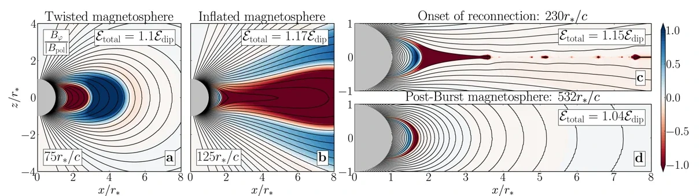
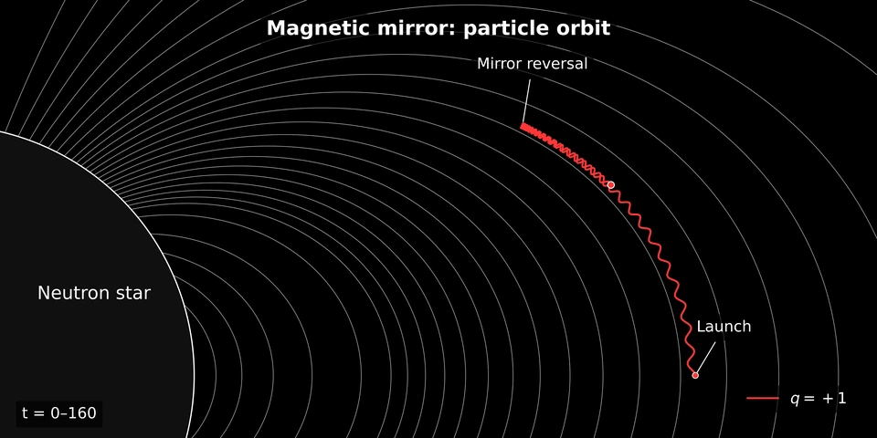
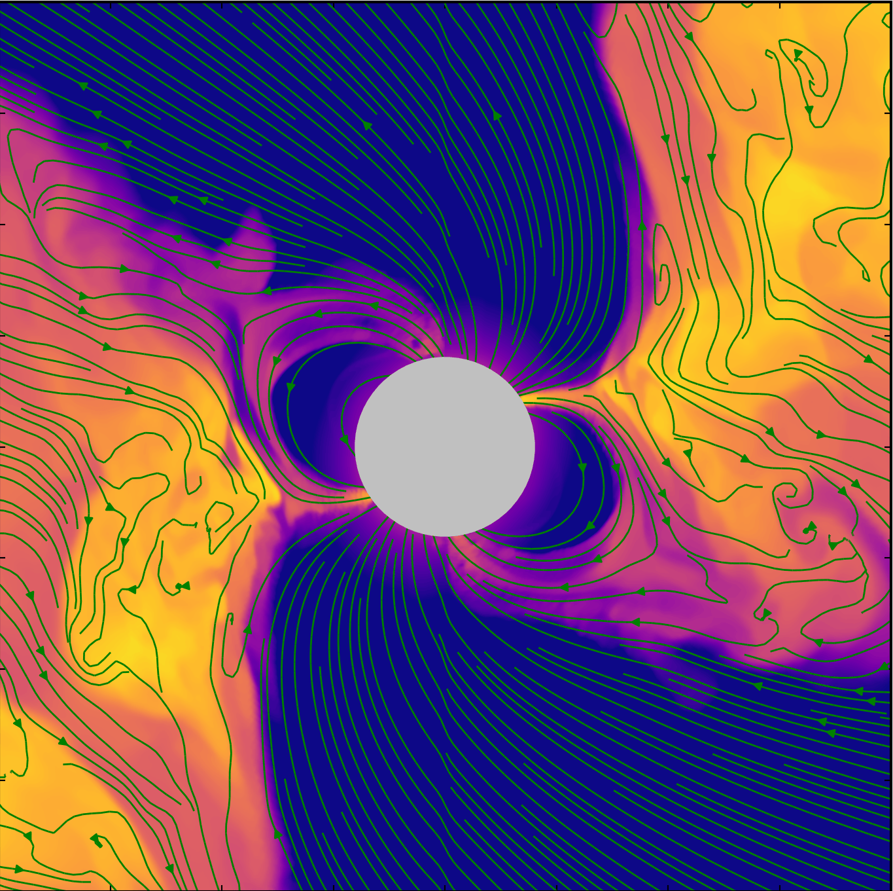

Published module
Coupled FFE–MHD
A coupled force-free electrodynamics and MHD treatment for strongly magnetized neutron-star environments, used for giant magnetar-burst simulations.
Chatterjee et al. (2026) ↗I develop and test numerical methods for relativistic plasmas around black holes and neutron stars. My work spans general relativistic magnetohydrodynamics, radiation transport, particle transport and, more recently, particle-in-cell codes.
I generally use H-AMR, my GPU-accelerated, massively parallelized GRMHD code. Beyond ideal GRMHD, I am adding new physics modules supported by targeted tests, conservation checks and production-scale simulations.

A coupled force-free electrodynamics and MHD treatment for strongly magnetized neutron-star environments, used for giant magnetar-burst simulations.
Chatterjee et al. (2026) ↗
Finite-conductivity evolution for current sheets and magnetospheres, with shock tests, stiff source updates and adaptive-mesh interface checks.
See selected tests ↓
Charged-particle integration through relativistic electromagnetic fields, with orbit benchmarks and coupling to simulation diagnostics.
View selected tests ↓Multigroup angular transport across mapped coordinates, MPI ranks and adaptive blocks, with implicit matter coupling and conservation checks.
See the SN test ↓A simulation is useful only when its numerical behavior is understood. These are selected completed checks from the larger H-AMR validation inventory. Each one targets a different failure mode: analytic accuracy, strong discontinuities, mesh transfers, radiation coupling, or reproducible restarts.
A steady spherical inflow provides a curved-spacetime regression test for the fluid solver. Radial profiles and conserved fluxes are checked against the analytic solution.
Strong relativistic discontinuities exercise the finite-volume reconstruction, resistive update, limiter, and coarse–fine mesh interfaces without hiding failed cells.
Angular and frequency-resolved radiation is transported across blocks, MPI ranks, mapped coordinates, and adaptive meshes, with positivity and conservation checks at each stage.
A 25-million-cell resistive turbulence run completed on one H100 after a checkpoint restart. Conserved budgets remained finite and invalid-state counters stayed at zero.

The numerical machinery becomes astrophysics in global simulations of accretion, relativistic jets, black-hole variability, and magnetized neutron-star environments.
A tilted magnetized flow around a rapidly spinning black hole.
GRMHDMagnetic activity produces rapid variability close to the horizon.
H-AMRRelativistic outflows connect the horizon to much larger scales.
GRMHD
Magnetic structure, entrainment, and instabilities shape a jet far from its source.
H-AMRThree-dimensional structure develops in a rotating magnetosphere.
Resistive MHD
A stellar magnetic field redirects the disk into columns and outflows.
H-AMR